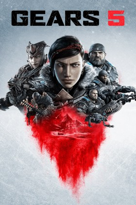

Video Juegos

FIFA 21
FIFA 21 es un videojuego de fútbol del año 2020 disponible para Microsoft Windows, PlayStation 4, Xbox One y Nintendo Switch el 9 de octubre de 2020, y también es el primer videojuego de la serie FIFA para PlayStation 5 y Xbox Series X|S. El juego es la 28.ª entrega de la serie de videojuegos de FIFA.

Gears 5
Gears 5 es un videojuego de acción en tercera persona desarrollado por The Coalition y publicado por Xbox Game Studios para Microsoft Windows y Xbox One. Es la sexta entrega de la saga Gears of War y la secuela directa de Gears of War 4. Fue lanzado el 10 de septiembre de 2019